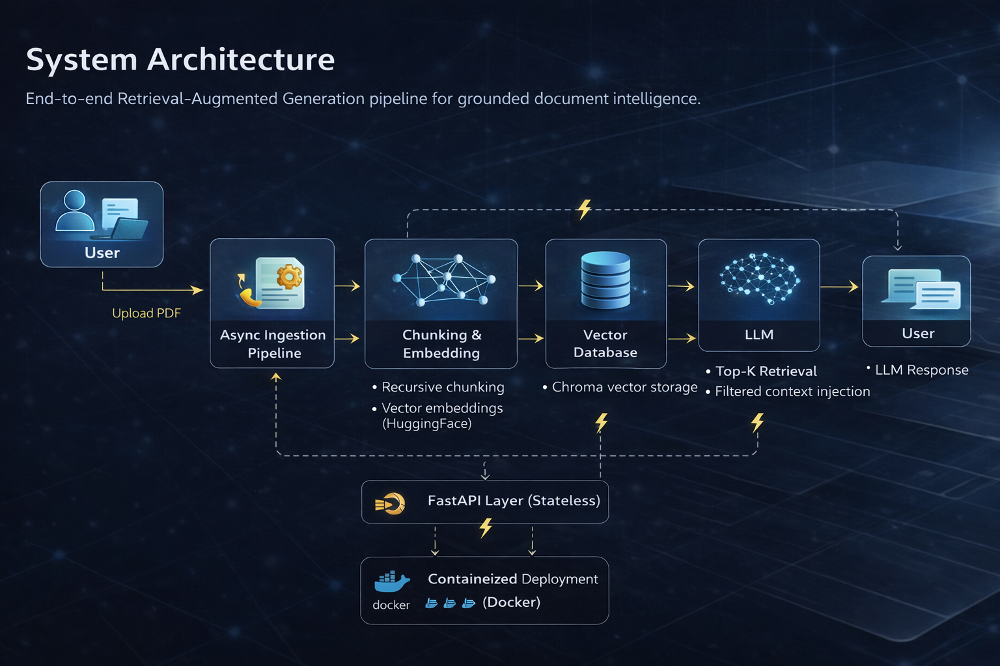

RAG PDF Chat
Scalable Retrieval-Augmented Generation platform for document-level question answering.

Scalable Retrieval-Augmented Generation platform for document-level question answering.
End-to-end Retrieval-Augmented Generation pipeline designed for scalable, grounded document intelligence.

LLMs hallucinate when answering questions about long-form documents. Traditional keyword search fails to preserve semantic intent.
Designed a production-ready RAG system that ingests PDFs, generates vector embeddings, performs similarity search, and injects relevant context into LLM prompts to ensure grounded responses.